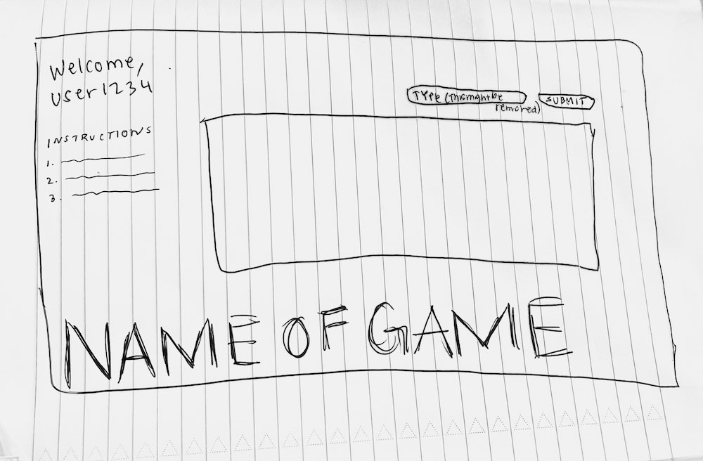
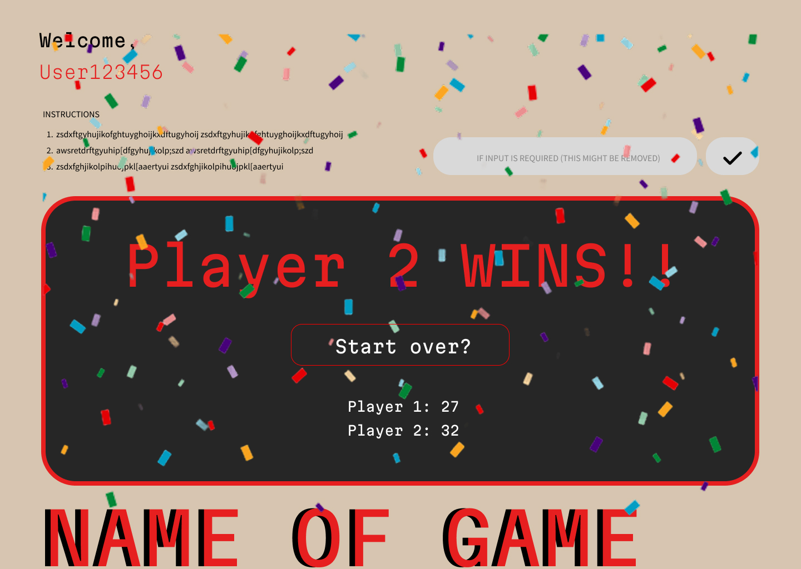

Previous iterations



What I am trying to accomplish with this redesign is somewhere between usability and functionality. The overall design look seems to be well received by users but understanding the game was not. Things that I will be implementing to improve this game is showing users their score that way they're able to keep track of it without having to memorize it. Doing this will also reflect it's functionality since the game doesn't end and no one wins even when they reach 30 points (as of now). What I'm mainly focusing on is winning since after all I believe that's the most satisfying part of a game, so I'll be indicating who has won and I think adding confetti will be a nice touch. I've noticed a lot of people like that feautre on Canvas so I think it'll also be rewarding on a game.